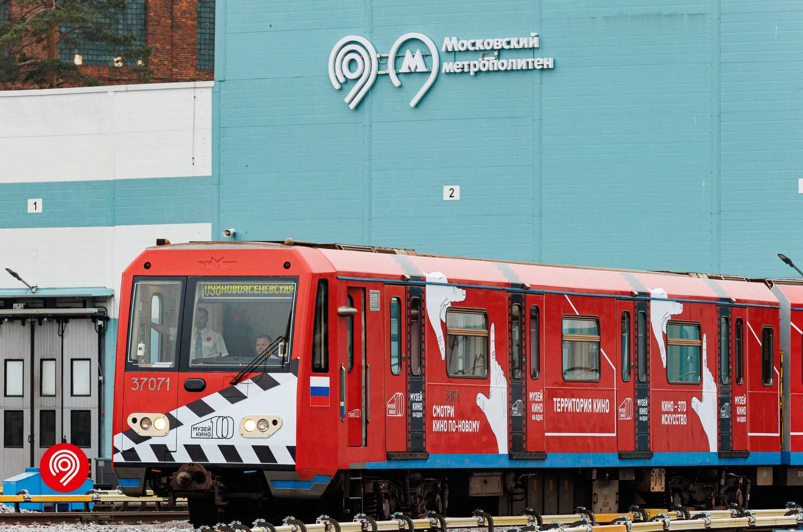
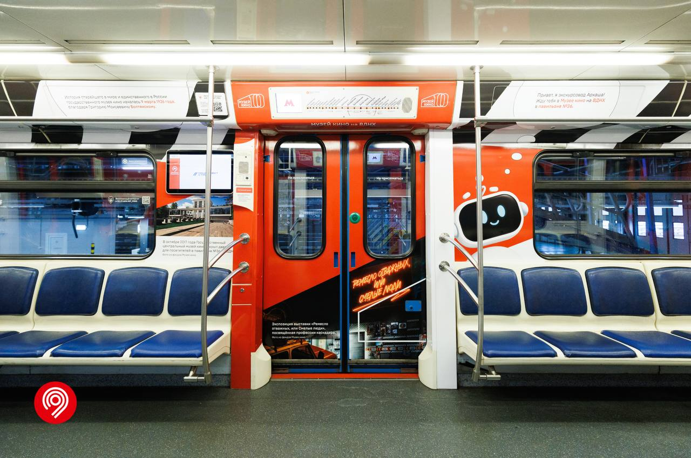

Новость
🔵 Свет, камера, мотор!
В московском метро запустили тематический поезд, посвященный Государственному центральному музею кино. Оформление разработали совместно с музеем, а сам состав на базе модели 81-760/761 «Ока» (бортовые номера 37071-37072) вышел на Калужско-Рижскую линию 7 ноября 2026 года. Он будет курсировать там в течение 6 месяцев.
Каждый вагон окрашен в красный цвет с надписями и тематическими рисунками. Внутри пассажиры:
- 🔹 Увидят более 80 архивных фотографий и других фотоматериалов, а также около 30 киноплакатов из собрания Музея кино.
- 🔹 Узнают о работе музея в наше время — его выставках, экспозициях и кинопоказах.
- 🔹 Найдут кадр из фильма, в котором впервые показали Московский метрополитен.
Также вы узнаете много интересных фактов об отечественном кинематографе. Например, когда состоялся первый публичный киносеанс в России, в каком году вышел первый советский звуковой фильм и какая картина положила начало авантюрно-приключенческому кино в стране.

📌 ТЧ-22 "Аминьевское"
Поезд, посвящённый Музею кино.

📌 Вагон №37071.
Салон вагона.
«По поручению Мэра Москвы Сергея Собянина мы активно сотрудничаем с культурными, общественными и образовательными организациями. Вместе запускаем транспортные проекты, благодаря которым пассажиры узнают интересные факты о столице и ее истории. Сегодня на линию вышел новый брендированный состав. Он посвящен Государственному центральному музею кино. Это уже 20-й тематический поезд в этом году и второй состав, посвященный кинематографу. В его вагонах разместили свыше 110 уникальных архивных материалов. Это поможет погрузиться в прошлое отечественного киноискусства и познакомиться с культовыми картинами»
— Максим Ликсутов